3 SS3 Results
| Pos | Car | Code | Time (s) | Gap | Diff |
|---|---|---|---|---|---|
| 1 | 8 | TÄN | 614.5 | 0.0 | 0.0 |
| 2 | 42 | BRE | 615.5 | 1.0 | 1.0 |
| 3 | 4 | LAP | 616.1 | 1.6 | 0.6 |
| 4 | 69 | ROV | 618.4 | 3.9 | 2.3 |
| 5 | 33 | EVA | 618.6 | 4.1 | 0.2 |
| 6 | 11 | NEU | 622.3 | 7.8 | 3.7 |
| 7 | 18 | KAT | 622.4 | 7.9 | 0.1 |
| 8 | 1 | OGI | 624.7 | 10.2 | 2.3 |
| 9 | 44 | GRE | 634.8 | 20.3 | 10.1 |
| 10 | 16 | FOU | 638.0 | 23.5 | 3.2 |
3.1 Stage SS3 Splits Analysis
Reports on splits
3.1.1 Split Locations
Length of each split section in km:
| full_split_distances | stage_dist | |
|---|---|---|
| split_1 | 5.51 | 5.51 |
| split_2 | 5.78 | 11.29 |
| split_3 | 7.48 | 18.77 |
| split_N | 2.60 | 21.37 |
3.1.2 Stage Split Times & Result
Summary of stage split times and overall stage result:
| code | split_1 | split_2 | split_3 | split_N | diffFirstS | position |
|---|---|---|---|---|---|---|
| TÄN | 151.4 | 324.8 | 530.4 | 614.5 | 0.0 | 1 |
| BRE | 151.8 | 324.7 | 532.4 | 615.5 | 1.0 | 2 |
| LAP | 153.4 | 326.7 | 533.1 | 616.1 | 1.6 | 3 |
| ROV | 152.4 | 327.7 | 535.2 | 618.4 | 3.9 | 4 |
| EVA | 152.4 | 327.6 | 535.6 | 618.6 | 4.1 | 5 |
| NEU | 154.0 | 330.5 | 537.7 | 622.3 | 7.8 | 6 |
| KAT | 154.0 | 330.0 | 537.6 | 622.4 | 7.9 | 7 |
| OGI | 154.1 | 330.7 | 540.9 | 624.7 | 10.2 | 8 |
| GRE | 156.7 | 335.2 | 548.4 | 634.8 | 20.3 | 9 |
| FOU | 156.8 | 336.8 | 550.8 | 638.0 | 23.5 | 10 |
3.1.3 Split Time Rankings
Rank of each split time:
| code | split_1 | split_2 | split_3 | split_N |
|---|---|---|---|---|
| TÄN | 1 | 2 | 1 | 1 |
| BRE | 2 | 1 | 2 | 2 |
| LAP | 4 | 3 | 3 | 3 |
| ROV | 3 | 5 | 4 | 4 |
| EVA | 3 | 4 | 5 | 5 |
| NEU | 5 | 7 | 7 | 6 |
| KAT | 5 | 6 | 6 | 7 |
| OGI | 6 | 8 | 8 | 8 |
| GRE | 7 | 9 | 9 | 9 |
| FOU | 8 | 10 | 10 | 10 |
Rank on each split section:
| code | split_1 | split_2 | split_3 | split_N |
|---|---|---|---|---|
| TÄN | 1 | 3 | 1 | 5 |
| BRE | 2 | 1 | 6 | 2 |
| LAP | 4 | 2 | 2 | 1 |
| ROV | 3 | 5 | 4 | 3 |
| EVA | 3 | 4 | 7 | 1 |
| NEU | 5 | 7 | 3 | 6 |
| KAT | 5 | 6 | 5 | 7 |
| OGI | 6 | 8 | 8 | 4 |
| GRE | 7 | 9 | 9 | 8 |
| FOU | 8 | 10 | 10 | 9 |
3.1.4 Split Section Pace
Pace is measured in seconds per kilometer, which is to say, how long it takes to complete each kilometer (lower is better):
| code | split_1 | split_2 | split_3 | split_N |
|---|---|---|---|---|
| TÄN | 27.48 | 30.00 | 27.49 | 32.35 |
| BRE | 27.55 | 29.91 | 27.77 | 31.96 |
| LAP | 27.84 | 29.98 | 27.59 | 31.92 |
| ROV | 27.66 | 30.33 | 27.74 | 32.00 |
| EVA | 27.66 | 30.31 | 27.81 | 31.92 |
| NEU | 27.95 | 30.54 | 27.70 | 32.54 |
| KAT | 27.95 | 30.45 | 27.75 | 32.62 |
| OGI | 27.97 | 30.55 | 28.10 | 32.23 |
| GRE | 28.44 | 30.88 | 28.50 | 33.23 |
| FOU | 28.46 | 31.14 | 28.61 | 33.54 |
3.1.5 Pace Chart
Pace relative to the stage winner.
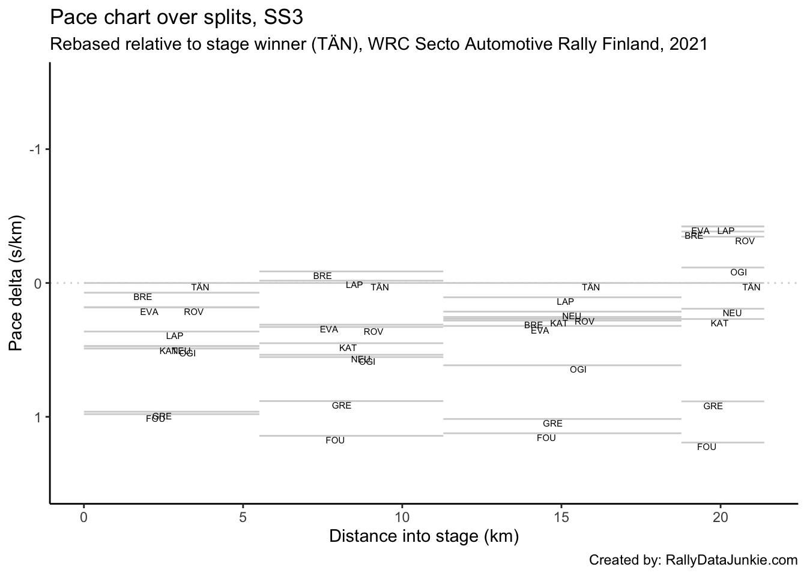
3.1.6 Ultimate Stage Comparisons
Split time comparisons relative to various ultimate stage time calculations.
These views provide various ways of comparing the performance of each driver to various ghost drivers:
- best recorded split time at each split (ultimate actuals): gives an estimate of how well the driver’s split times compare with each first ranked split time (time into stage at each split);
- fastest time going from one split to the next (ultimate sections): gives an estimate of how quickly each driver completed each split section relative to the quickest time recorded completing that split section (time taken to go from one split point to the next);
- accumulated ultimate sections times: gives and estimate of how quickly the driver is going relative to the fastest possible completion of the stage based on accumulated ultimate split section times.
3.1.6.1 Ultimate Actuals
Driver times compared to the first ranked recorded split time at each split:
| code | split_1 | split_2 | split_3 | split_N |
|---|---|---|---|---|
| TÄN | 0.0 | 0.1 | 0.0 | 0.0 |
| BRE | 0.4 | 0.0 | 2.0 | 1.0 |
| LAP | 2.0 | 2.0 | 2.7 | 1.6 |
| ROV | 1.0 | 3.0 | 4.8 | 3.9 |
| EVA | 1.0 | 2.9 | 5.2 | 4.1 |
| NEU | 2.6 | 5.8 | 7.3 | 7.8 |
| KAT | 2.6 | 5.3 | 7.2 | 7.9 |
| OGI | 2.7 | 6.0 | 10.5 | 10.2 |
| GRE | 5.3 | 10.5 | 18.0 | 20.3 |
| FOU | 5.4 | 12.1 | 20.4 | 23.5 |
| ultimate | 0.0 | 0.0 | 0.0 | 0.0 |
3.1.6.2 Ultimate Sections
Split durations rebased relative to the fastest transit of each split section:
| code | split_1 | split_2 | split_3 | split_N |
|---|---|---|---|---|
| TÄN | 0.0 | 0.5 | 0.0 | 1.1 |
| BRE | 0.4 | 0.0 | 2.1 | 0.1 |
| LAP | 2.0 | 0.4 | 0.8 | 0.0 |
| ROV | 1.0 | 2.4 | 1.9 | 0.2 |
| EVA | 1.0 | 2.3 | 2.4 | 0.0 |
| NEU | 2.6 | 3.6 | 1.6 | 1.6 |
| KAT | 2.6 | 3.1 | 2.0 | 1.8 |
| OGI | 2.7 | 3.7 | 4.6 | 0.8 |
| GRE | 5.3 | 5.6 | 7.6 | 3.4 |
| FOU | 5.4 | 7.1 | 8.4 | 4.2 |
| ultimate | 0.0 | 0.0 | 0.0 | 0.0 |
3.1.6.3 Ultimate Accumulated Sections
Actual split times relative to the accumulated ultimate split section times:
| code | split_1 | split_2 | split_3 | split_N |
|---|---|---|---|---|
| TÄN | 0.0 | 0.5 | 0.5 | 1.6 |
| BRE | 0.4 | 0.4 | 2.5 | 2.6 |
| LAP | 2.0 | 2.4 | 3.2 | 3.2 |
| ROV | 1.0 | 3.4 | 5.3 | 5.5 |
| EVA | 1.0 | 3.3 | 5.7 | 5.7 |
| NEU | 2.6 | 6.2 | 7.8 | 9.4 |
| KAT | 2.6 | 5.7 | 7.7 | 9.5 |
| OGI | 2.7 | 6.4 | 11.0 | 11.8 |
| GRE | 5.3 | 10.9 | 18.5 | 21.9 |
| FOU | 5.4 | 12.5 | 20.9 | 25.1 |
| ultimate | 0.0 | 0.0 | 0.0 | 0.0 |
3.1.7 Split Section Pace Distribution
Distribution of pace values for each split section:
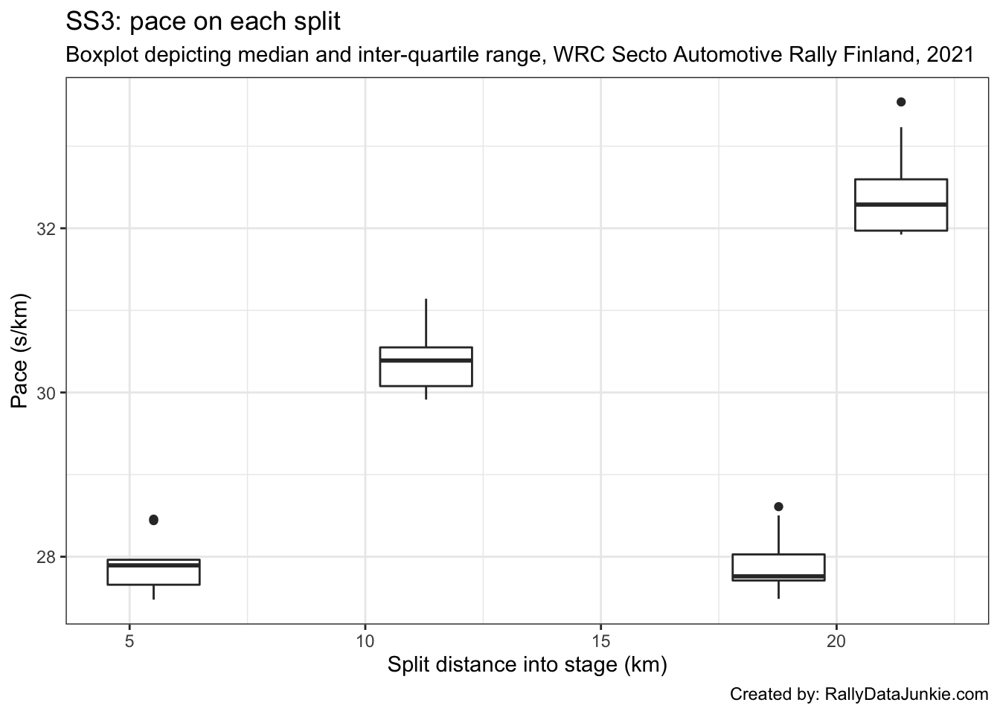
3.2 Text report
| code | identifier | entryId | stage | overall_pos | prev_position | retained_lead | lost_lead | gained_lead | overall_position_delta | overall_chase_code | overall_lead_code | overall_gap | overall_diff | overall_chase | overall_stage_pos | stage_position | stage_win | position | TimeInS | gap | diff | chase | chase_code | lead_code |
|---|---|---|---|---|---|---|---|---|---|---|---|---|---|---|---|---|---|---|---|---|---|---|---|---|
| TÄN | 8 | 23801 | SS3 | 1 | 1 | TRUE | FALSE | FALSE | 0 | BRE | NA | 0.0 | NA | 1.7 | 1 | 1 | TRUE | 1 | 614.5 | 0.0 | 0.0 | 1.0 | BRE | NA |
| BRE | 42 | 23803 | SS3 | 2 | 2 | FALSE | FALSE | FALSE | 0 | LAP | TÄN | 1.7 | 1.7 | 3.7 | 2 | 2 | FALSE | 2 | 615.5 | 1.0 | 1.0 | 0.6 | LAP | TÄN |
| LAP | 4 | 23806 | SS3 | 3 | 4 | FALSE | FALSE | FALSE | 1 | EVA | BRE | 5.4 | 3.7 | 0.5 | 3 | 3 | FALSE | 3 | 616.1 | 1.6 | 0.6 | 2.3 | ROV | BRE |
| ROV | 69 | 23800 | SS3 | 5 | 5 | FALSE | FALSE | FALSE | 0 | NEU | EVA | 7.8 | 1.9 | 5.2 | 4 | 4 | FALSE | 4 | 618.4 | 3.9 | 2.3 | 0.2 | EVA | LAP |
| EVA | 33 | 23798 | SS3 | 4 | 3 | FALSE | FALSE | FALSE | -1 | ROV | LAP | 5.9 | 0.5 | 1.9 | 5 | 5 | FALSE | 5 | 618.6 | 4.1 | 0.2 | 3.7 | NEU | ROV |
| NEU | 11 | 23799 | SS3 | 6 | 6 | FALSE | FALSE | FALSE | 0 | OGI | ROV | 13.0 | 5.2 | 2.6 | 6 | 6 | FALSE | 6 | 622.3 | 7.8 | 3.7 | 0.1 | KAT | EVA |
| KAT | 18 | 23802 | SS3 | 8 | 10 | FALSE | FALSE | FALSE | 2 | GRE | OGI | 28.4 | 12.8 | 4.2 | 7 | 7 | FALSE | 7 | 622.4 | 7.9 | 0.1 | 2.3 | OGI | NEU |
| OGI | 1 | 23797 | SS3 | 7 | 7 | FALSE | FALSE | FALSE | 0 | KAT | NEU | 15.6 | 2.6 | 12.8 | 8 | 8 | FALSE | 8 | 624.7 | 10.2 | 2.3 | 10.1 | GRE | KAT |
| GRE | 44 | 23804 | SS3 | 9 | 8 | FALSE | FALSE | FALSE | -1 | FOU | KAT | 32.6 | 4.2 | 8.2 | 9 | 9 | FALSE | 9 | 634.8 | 20.3 | 10.1 | 3.2 | FOU | OGI |
| FOU | 16 | 23805 | SS3 | 10 | 9 | FALSE | FALSE | FALSE | -1 | NA | GRE | 40.8 | 8.2 | NA | 10 | 10 | FALSE | 10 | 638.0 | 23.5 | 3.2 | NA | NA | GRE |
Stage report for SS3:
TÄN took the stage win and retained the overall lead recording a time of 614.5s.
BRE was in second position on stage, with a time of 615.5s .
LAP took third on stage, 1.6s behind TÄN in a time of 616.1s and moved up one place to third overall, just 0.6s further behind BRE.
ROV took fourth on stage, with a time of 618.4s .
EVA was in fifth place on stage, with a time of 618.6s dropped one place to fourth overall and just 0.2s further back behind ROV.
NEU took sixth place on stage, 3.7s behind EVA .
KAT was in seventh on stage, 7.9s behind stage winner TÄN in a time of 622.4s and moved up two places to eighth overall, just 0.1s further back behind NEU.
OGI took eighth on stage, 10.2s behind the stage winner .
GRE took ninth on stage, with a time of 634.8s dropped one place to ninth overall.
FOU took tenth position on stage, 3.2s further back behind GRE dropped one place to tenth overall.
3.3 Driver Report, SS3 - OGI
OGI took eighth on stage, 10.2s behind the stage winner .
Stage report for OGI.
| Pos | Car | Code | Time (s) | Gap | Diff |
|---|---|---|---|---|---|
| 1 | 8 | TÄN | -10.2 | -10.2 | 0.0 |
| 2 | 42 | BRE | -9.2 | -9.2 | 1.0 |
| 3 | 4 | LAP | -8.6 | -8.6 | 0.6 |
| 4 | 69 | ROV | -6.3 | -6.3 | 2.3 |
| 5 | 33 | EVA | -6.1 | -6.1 | 0.2 |
| 6 | 11 | NEU | -2.4 | -2.4 | 3.7 |
| 7 | 18 | KAT | -2.3 | -2.3 | 0.1 |
| 8 | 1 | OGI | 0.0 | 0.0 | 2.3 |
| 9 | 44 | GRE | 10.1 | 10.1 | 10.1 |
| 10 | 16 | FOU | 13.3 | 13.3 | 3.2 |
3.3.1 Rebased Split Times
OGI’s delta at each split compared to other drivers.
| code | split_1 | split_2 | split_3 | split_N |
|---|---|---|---|---|
| TÄN | -2.7 | -5.9 | -10.5 | -10.2 |
| BRE | -2.3 | -6.0 | -8.5 | -9.2 |
| LAP | -0.7 | -4.0 | -7.8 | -8.6 |
| ROV | -1.7 | -3.0 | -5.7 | -6.3 |
| EVA | -1.7 | -3.1 | -5.3 | -6.1 |
| NEU | -0.1 | -0.2 | -3.2 | -2.4 |
| KAT | -0.1 | -0.7 | -3.3 | -2.3 |
| OGI | 0.0 | 0.0 | 0.0 | 0.0 |
| GRE | 2.6 | 4.5 | 7.5 | 10.1 |
| FOU | 2.7 | 6.1 | 9.9 | 13.3 |
3.3.2 Off-the-Pace Chart
Accumulated stage time deltas at each split:
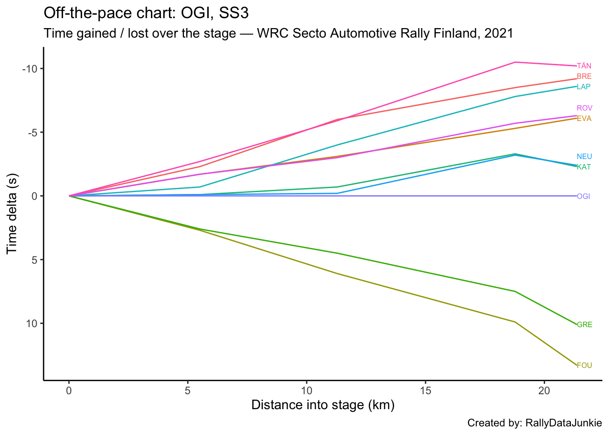
3.3.3 Within-Split Duration Deltas
OGI’s delta in time to complete each split section compared to other drivers:
| code | split_1 | split_2 | split_3 | split_N |
|---|---|---|---|---|
| TÄN | -2.7 | -3.2 | -4.6 | 0.3 |
| BRE | -2.3 | -3.7 | -2.5 | -0.7 |
| LAP | -0.7 | -3.3 | -3.8 | -0.8 |
| ROV | -1.7 | -1.3 | -2.7 | -0.6 |
| EVA | -1.7 | -1.4 | -2.2 | -0.8 |
| NEU | -0.1 | -0.1 | -3.0 | 0.8 |
| KAT | -0.1 | -0.6 | -2.6 | 1.0 |
| OGI | 0.0 | 0.0 | 0.0 | 0.0 |
| GRE | 2.6 | 1.9 | 3.0 | 2.6 |
| FOU | 2.7 | 3.4 | 3.8 | 3.4 |
3.3.4 Within-Split Pace Deltas
| code | split_1 | split_2 | split_3 | split_N |
|---|---|---|---|---|
| TÄN | -0.49 | -0.55 | -0.61 | 0.12 |
| BRE | -0.42 | -0.64 | -0.33 | -0.27 |
| LAP | -0.13 | -0.57 | -0.51 | -0.31 |
| ROV | -0.31 | -0.22 | -0.36 | -0.23 |
| EVA | -0.31 | -0.24 | -0.29 | -0.31 |
| NEU | -0.02 | -0.02 | -0.40 | 0.31 |
| KAT | -0.02 | -0.10 | -0.35 | 0.38 |
| OGI | 0.00 | 0.00 | 0.00 | 0.00 |
| GRE | 0.47 | 0.33 | 0.40 | 1.00 |
| FOU | 0.49 | 0.59 | 0.51 | 1.31 |
3.3.5 Within-Split Pace Map
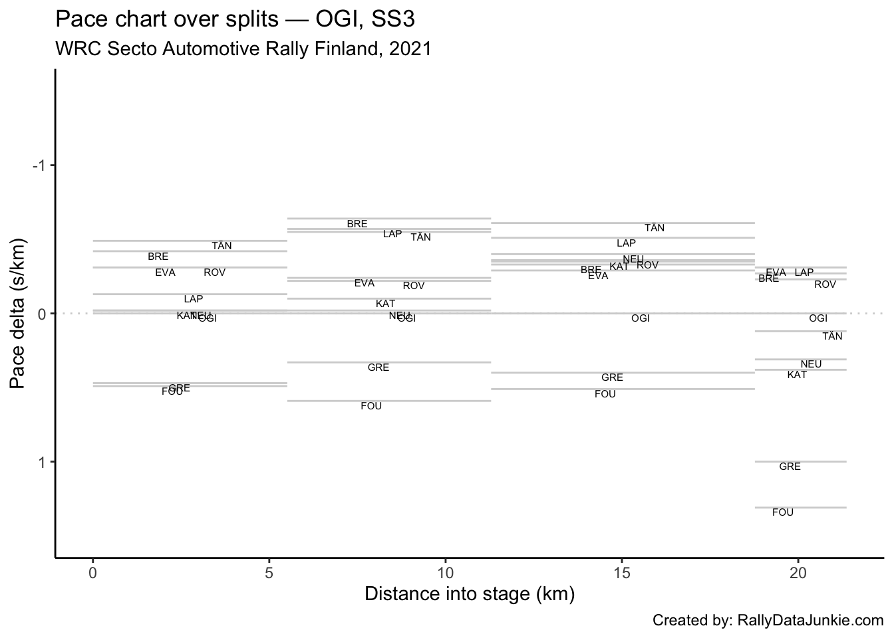
3.4 Driver Report, SS3 - EVA
EVA was in fifth place on stage, with a time of 618.6s dropped one place to fourth overall and just 0.2s further back behind ROV.
Stage report for EVA.
| Pos | Car | Code | Time (s) | Gap | Diff |
|---|---|---|---|---|---|
| 1 | 8 | TÄN | -4.1 | -4.1 | 0.0 |
| 2 | 42 | BRE | -3.1 | -3.1 | 1.0 |
| 3 | 4 | LAP | -2.5 | -2.5 | 0.6 |
| 4 | 69 | ROV | -0.2 | -0.2 | 2.3 |
| 5 | 33 | EVA | 0.0 | 0.0 | 0.2 |
| 6 | 11 | NEU | 3.7 | 3.7 | 3.7 |
| 7 | 18 | KAT | 3.8 | 3.8 | 0.1 |
| 8 | 1 | OGI | 6.1 | 6.1 | 2.3 |
| 9 | 44 | GRE | 16.2 | 16.2 | 10.1 |
| 10 | 16 | FOU | 19.4 | 19.4 | 3.2 |
3.4.1 Rebased Split Times
EVA’s delta at each split compared to other drivers.
| code | split_1 | split_2 | split_3 | split_N |
|---|---|---|---|---|
| TÄN | -1.0 | -2.8 | -5.2 | -4.1 |
| BRE | -0.6 | -2.9 | -3.2 | -3.1 |
| LAP | 1.0 | -0.9 | -2.5 | -2.5 |
| ROV | 0.0 | 0.1 | -0.4 | -0.2 |
| EVA | 0.0 | 0.0 | 0.0 | 0.0 |
| NEU | 1.6 | 2.9 | 2.1 | 3.7 |
| KAT | 1.6 | 2.4 | 2.0 | 3.8 |
| OGI | 1.7 | 3.1 | 5.3 | 6.1 |
| GRE | 4.3 | 7.6 | 12.8 | 16.2 |
| FOU | 4.4 | 9.2 | 15.2 | 19.4 |
3.4.2 Off-the-Pace Chart
Accumulated stage time deltas at each split:
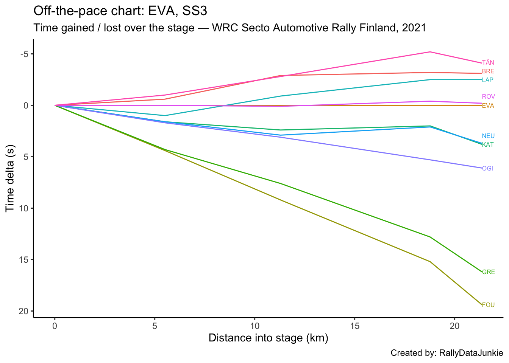
3.4.3 Within-Split Duration Deltas
EVA’s delta in time to complete each split section compared to other drivers:
| code | split_1 | split_2 | split_3 | split_N |
|---|---|---|---|---|
| TÄN | -1.0 | -1.8 | -2.4 | 1.1 |
| BRE | -0.6 | -2.3 | -0.3 | 0.1 |
| LAP | 1.0 | -1.9 | -1.6 | 0.0 |
| ROV | 0.0 | 0.1 | -0.5 | 0.2 |
| EVA | 0.0 | 0.0 | 0.0 | 0.0 |
| NEU | 1.6 | 1.3 | -0.8 | 1.6 |
| KAT | 1.6 | 0.8 | -0.4 | 1.8 |
| OGI | 1.7 | 1.4 | 2.2 | 0.8 |
| GRE | 4.3 | 3.3 | 5.2 | 3.4 |
| FOU | 4.4 | 4.8 | 6.0 | 4.2 |
3.4.4 Within-Split Pace Deltas
| code | split_1 | split_2 | split_3 | split_N |
|---|---|---|---|---|
| TÄN | -0.18 | -0.31 | -0.32 | 0.42 |
| BRE | -0.11 | -0.40 | -0.04 | 0.04 |
| LAP | 0.18 | -0.33 | -0.21 | 0.00 |
| ROV | 0.00 | 0.02 | -0.07 | 0.08 |
| EVA | 0.00 | 0.00 | 0.00 | 0.00 |
| NEU | 0.29 | 0.22 | -0.11 | 0.62 |
| KAT | 0.29 | 0.14 | -0.05 | 0.69 |
| OGI | 0.31 | 0.24 | 0.29 | 0.31 |
| GRE | 0.78 | 0.57 | 0.70 | 1.31 |
| FOU | 0.80 | 0.83 | 0.80 | 1.62 |
3.4.5 Within-Split Pace Map
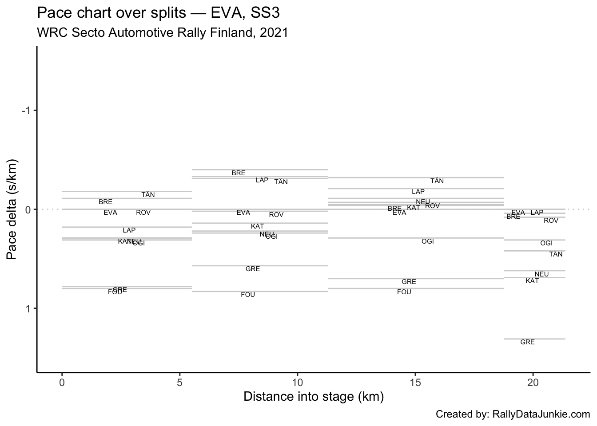
3.5 Driver Report, SS3 - NEU
NEU took sixth place on stage, 3.7s behind EVA .
Stage report for NEU.
| Pos | Car | Code | Time (s) | Gap | Diff |
|---|---|---|---|---|---|
| 1 | 8 | TÄN | -7.8 | -7.8 | 0.0 |
| 2 | 42 | BRE | -6.8 | -6.8 | 1.0 |
| 3 | 4 | LAP | -6.2 | -6.2 | 0.6 |
| 4 | 69 | ROV | -3.9 | -3.9 | 2.3 |
| 5 | 33 | EVA | -3.7 | -3.7 | 0.2 |
| 6 | 11 | NEU | 0.0 | 0.0 | 3.7 |
| 7 | 18 | KAT | 0.1 | 0.1 | 0.1 |
| 8 | 1 | OGI | 2.4 | 2.4 | 2.3 |
| 9 | 44 | GRE | 12.5 | 12.5 | 10.1 |
| 10 | 16 | FOU | 15.7 | 15.7 | 3.2 |
3.5.1 Rebased Split Times
NEU’s delta at each split compared to other drivers.
| code | split_1 | split_2 | split_3 | split_N |
|---|---|---|---|---|
| TÄN | -2.6 | -5.7 | -7.3 | -7.8 |
| BRE | -2.2 | -5.8 | -5.3 | -6.8 |
| LAP | -0.6 | -3.8 | -4.6 | -6.2 |
| ROV | -1.6 | -2.8 | -2.5 | -3.9 |
| EVA | -1.6 | -2.9 | -2.1 | -3.7 |
| NEU | 0.0 | 0.0 | 0.0 | 0.0 |
| KAT | 0.0 | -0.5 | -0.1 | 0.1 |
| OGI | 0.1 | 0.2 | 3.2 | 2.4 |
| GRE | 2.7 | 4.7 | 10.7 | 12.5 |
| FOU | 2.8 | 6.3 | 13.1 | 15.7 |
3.5.2 Off-the-Pace Chart
Accumulated stage time deltas at each split:
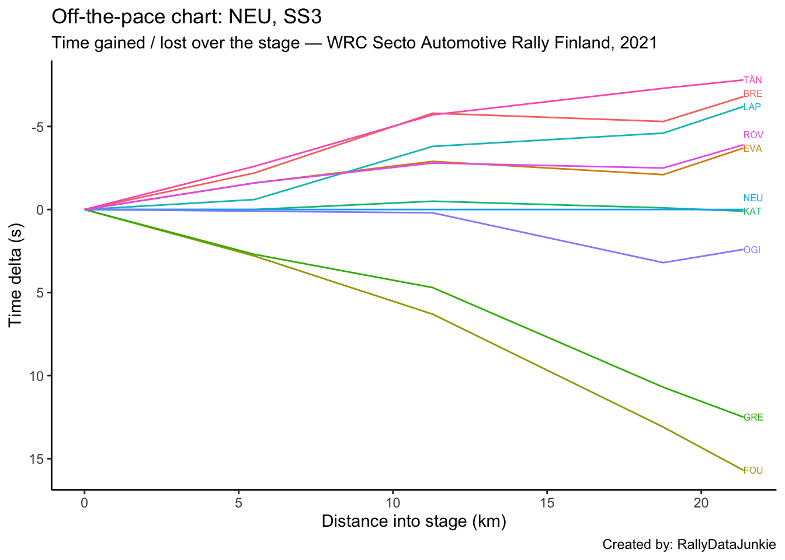
3.5.3 Within-Split Duration Deltas
NEU’s delta in time to complete each split section compared to other drivers:
| code | split_1 | split_2 | split_3 | split_N |
|---|---|---|---|---|
| TÄN | -2.6 | -3.1 | -1.6 | -0.5 |
| BRE | -2.2 | -3.6 | 0.5 | -1.5 |
| LAP | -0.6 | -3.2 | -0.8 | -1.6 |
| ROV | -1.6 | -1.2 | 0.3 | -1.4 |
| EVA | -1.6 | -1.3 | 0.8 | -1.6 |
| NEU | 0.0 | 0.0 | 0.0 | 0.0 |
| KAT | 0.0 | -0.5 | 0.4 | 0.2 |
| OGI | 0.1 | 0.1 | 3.0 | -0.8 |
| GRE | 2.7 | 2.0 | 6.0 | 1.8 |
| FOU | 2.8 | 3.5 | 6.8 | 2.6 |
3.5.4 Within-Split Pace Deltas
| code | split_1 | split_2 | split_3 | split_N |
|---|---|---|---|---|
| TÄN | -0.47 | -0.54 | -0.21 | -0.19 |
| BRE | -0.40 | -0.62 | 0.07 | -0.58 |
| LAP | -0.11 | -0.55 | -0.11 | -0.62 |
| ROV | -0.29 | -0.21 | 0.04 | -0.54 |
| EVA | -0.29 | -0.22 | 0.11 | -0.62 |
| NEU | 0.00 | 0.00 | 0.00 | 0.00 |
| KAT | 0.00 | -0.09 | 0.05 | 0.08 |
| OGI | 0.02 | 0.02 | 0.40 | -0.31 |
| GRE | 0.49 | 0.35 | 0.80 | 0.69 |
| FOU | 0.51 | 0.61 | 0.91 | 1.00 |
3.5.5 Within-Split Pace Map
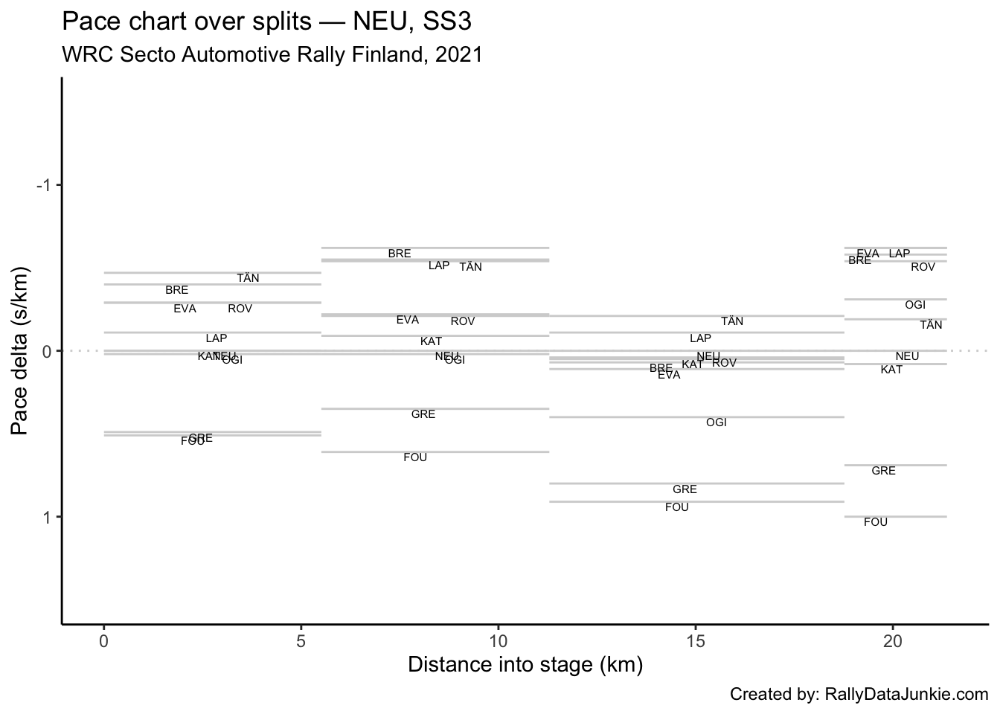
3.6 Driver Report, SS3 - ROV
ROV took fourth on stage, with a time of 618.4s .
Stage report for ROV.
| Pos | Car | Code | Time (s) | Gap | Diff |
|---|---|---|---|---|---|
| 1 | 8 | TÄN | -3.9 | -3.9 | 0.0 |
| 2 | 42 | BRE | -2.9 | -2.9 | 1.0 |
| 3 | 4 | LAP | -2.3 | -2.3 | 0.6 |
| 4 | 69 | ROV | 0.0 | 0.0 | 2.3 |
| 5 | 33 | EVA | 0.2 | 0.2 | 0.2 |
| 6 | 11 | NEU | 3.9 | 3.9 | 3.7 |
| 7 | 18 | KAT | 4.0 | 4.0 | 0.1 |
| 8 | 1 | OGI | 6.3 | 6.3 | 2.3 |
| 9 | 44 | GRE | 16.4 | 16.4 | 10.1 |
| 10 | 16 | FOU | 19.6 | 19.6 | 3.2 |
3.6.1 Rebased Split Times
ROV’s delta at each split compared to other drivers.
| code | split_1 | split_2 | split_3 | split_N |
|---|---|---|---|---|
| TÄN | -1.0 | -2.9 | -4.8 | -3.9 |
| BRE | -0.6 | -3.0 | -2.8 | -2.9 |
| LAP | 1.0 | -1.0 | -2.1 | -2.3 |
| ROV | 0.0 | 0.0 | 0.0 | 0.0 |
| EVA | 0.0 | -0.1 | 0.4 | 0.2 |
| NEU | 1.6 | 2.8 | 2.5 | 3.9 |
| KAT | 1.6 | 2.3 | 2.4 | 4.0 |
| OGI | 1.7 | 3.0 | 5.7 | 6.3 |
| GRE | 4.3 | 7.5 | 13.2 | 16.4 |
| FOU | 4.4 | 9.1 | 15.6 | 19.6 |
3.6.2 Off-the-Pace Chart
Accumulated stage time deltas at each split:
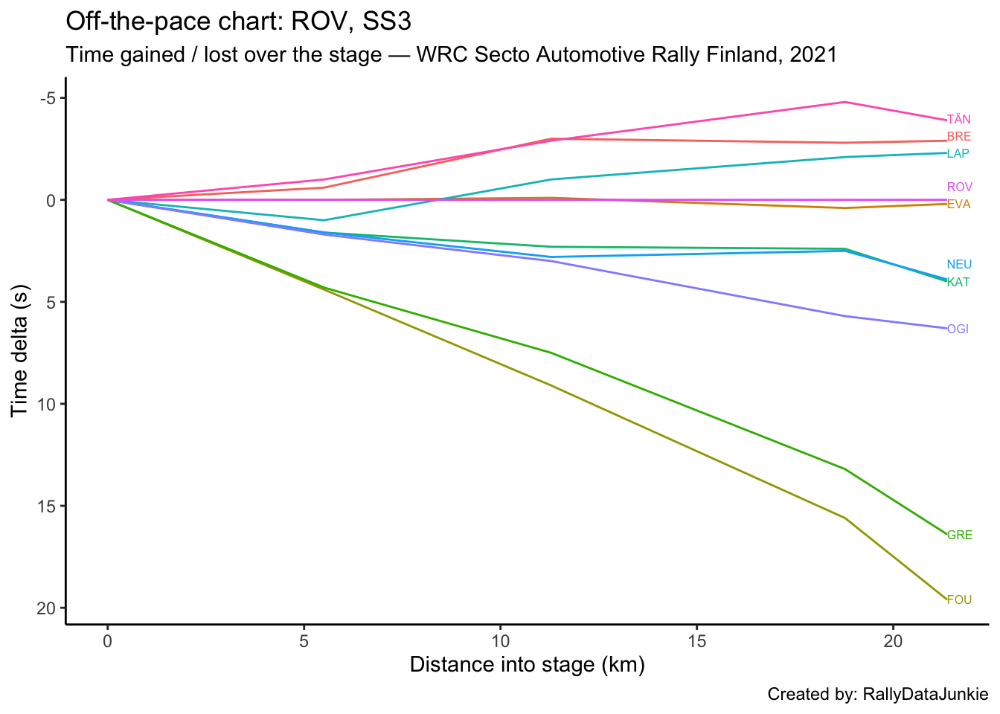
3.6.3 Within-Split Duration Deltas
ROV’s delta in time to complete each split section compared to other drivers:
| code | split_1 | split_2 | split_3 | split_N |
|---|---|---|---|---|
| TÄN | -1.0 | -1.9 | -1.9 | 0.9 |
| BRE | -0.6 | -2.4 | 0.2 | -0.1 |
| LAP | 1.0 | -2.0 | -1.1 | -0.2 |
| ROV | 0.0 | 0.0 | 0.0 | 0.0 |
| EVA | 0.0 | -0.1 | 0.5 | -0.2 |
| NEU | 1.6 | 1.2 | -0.3 | 1.4 |
| KAT | 1.6 | 0.7 | 0.1 | 1.6 |
| OGI | 1.7 | 1.3 | 2.7 | 0.6 |
| GRE | 4.3 | 3.2 | 5.7 | 3.2 |
| FOU | 4.4 | 4.7 | 6.5 | 4.0 |
3.6.4 Within-Split Pace Deltas
| code | split_1 | split_2 | split_3 | split_N |
|---|---|---|---|---|
| TÄN | -0.18 | -0.33 | -0.25 | 0.35 |
| BRE | -0.11 | -0.42 | 0.03 | -0.04 |
| LAP | 0.18 | -0.35 | -0.15 | -0.08 |
| ROV | 0.00 | 0.00 | 0.00 | 0.00 |
| EVA | 0.00 | -0.02 | 0.07 | -0.08 |
| NEU | 0.29 | 0.21 | -0.04 | 0.54 |
| KAT | 0.29 | 0.12 | 0.01 | 0.62 |
| OGI | 0.31 | 0.22 | 0.36 | 0.23 |
| GRE | 0.78 | 0.55 | 0.76 | 1.23 |
| FOU | 0.80 | 0.81 | 0.87 | 1.54 |
3.6.5 Within-Split Pace Map
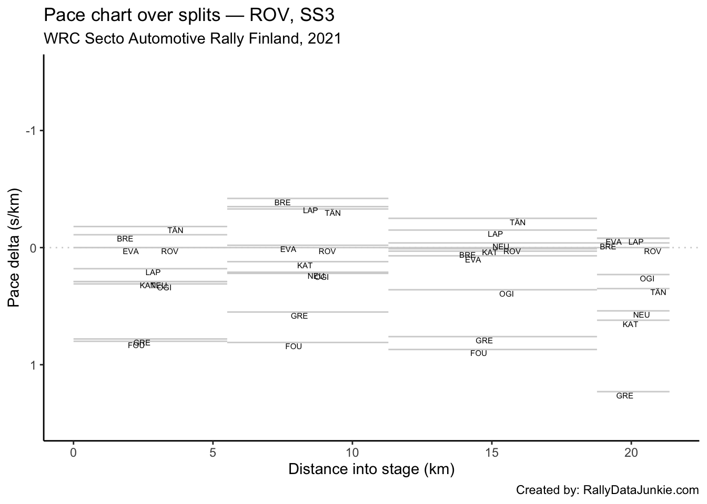
3.7 Driver Report, SS3 - TÄN
TÄN took the stage win and retained the overall lead recording a time of 614.5s.
Stage report for TÄN.
| Pos | Car | Code | Time (s) | Gap | Diff |
|---|---|---|---|---|---|
| 1 | 8 | TÄN | 0.0 | 0.0 | 0.0 |
| 2 | 42 | BRE | 1.0 | 1.0 | 1.0 |
| 3 | 4 | LAP | 1.6 | 1.6 | 0.6 |
| 4 | 69 | ROV | 3.9 | 3.9 | 2.3 |
| 5 | 33 | EVA | 4.1 | 4.1 | 0.2 |
| 6 | 11 | NEU | 7.8 | 7.8 | 3.7 |
| 7 | 18 | KAT | 7.9 | 7.9 | 0.1 |
| 8 | 1 | OGI | 10.2 | 10.2 | 2.3 |
| 9 | 44 | GRE | 20.3 | 20.3 | 10.1 |
| 10 | 16 | FOU | 23.5 | 23.5 | 3.2 |
3.7.1 Rebased Split Times
TÄN’s delta at each split compared to other drivers.
| code | split_1 | split_2 | split_3 | split_N |
|---|---|---|---|---|
| TÄN | 0.0 | 0.0 | 0.0 | 0.0 |
| BRE | 0.4 | -0.1 | 2.0 | 1.0 |
| LAP | 2.0 | 1.9 | 2.7 | 1.6 |
| ROV | 1.0 | 2.9 | 4.8 | 3.9 |
| EVA | 1.0 | 2.8 | 5.2 | 4.1 |
| NEU | 2.6 | 5.7 | 7.3 | 7.8 |
| KAT | 2.6 | 5.2 | 7.2 | 7.9 |
| OGI | 2.7 | 5.9 | 10.5 | 10.2 |
| GRE | 5.3 | 10.4 | 18.0 | 20.3 |
| FOU | 5.4 | 12.0 | 20.4 | 23.5 |
3.7.2 Off-the-Pace Chart
Accumulated stage time deltas at each split:
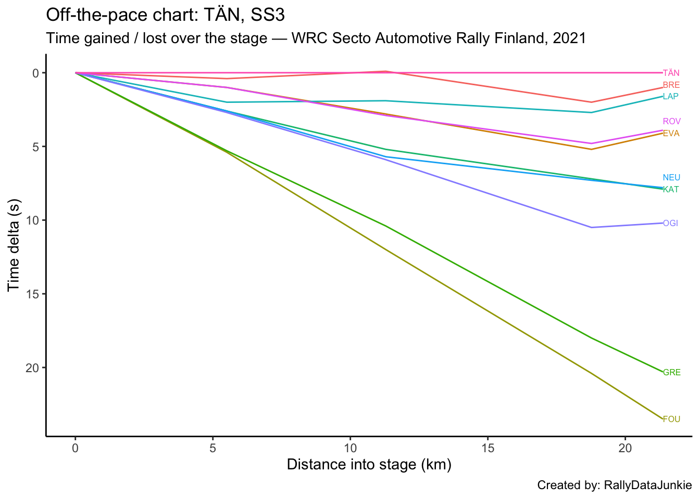
3.7.3 Within-Split Duration Deltas
TÄN’s delta in time to complete each split section compared to other drivers:
| code | split_1 | split_2 | split_3 | split_N |
|---|---|---|---|---|
| TÄN | 0.0 | 0.0 | 0.0 | 0.0 |
| BRE | 0.4 | -0.5 | 2.1 | -1.0 |
| LAP | 2.0 | -0.1 | 0.8 | -1.1 |
| ROV | 1.0 | 1.9 | 1.9 | -0.9 |
| EVA | 1.0 | 1.8 | 2.4 | -1.1 |
| NEU | 2.6 | 3.1 | 1.6 | 0.5 |
| KAT | 2.6 | 2.6 | 2.0 | 0.7 |
| OGI | 2.7 | 3.2 | 4.6 | -0.3 |
| GRE | 5.3 | 5.1 | 7.6 | 2.3 |
| FOU | 5.4 | 6.6 | 8.4 | 3.1 |
3.7.4 Within-Split Pace Deltas
| code | split_1 | split_2 | split_3 | split_N |
|---|---|---|---|---|
| TÄN | 0.00 | 0.00 | 0.00 | 0.00 |
| BRE | 0.07 | -0.09 | 0.28 | -0.38 |
| LAP | 0.36 | -0.02 | 0.11 | -0.42 |
| ROV | 0.18 | 0.33 | 0.25 | -0.35 |
| EVA | 0.18 | 0.31 | 0.32 | -0.42 |
| NEU | 0.47 | 0.54 | 0.21 | 0.19 |
| KAT | 0.47 | 0.45 | 0.27 | 0.27 |
| OGI | 0.49 | 0.55 | 0.61 | -0.12 |
| GRE | 0.96 | 0.88 | 1.02 | 0.88 |
| FOU | 0.98 | 1.14 | 1.12 | 1.19 |
3.7.5 Within-Split Pace Map
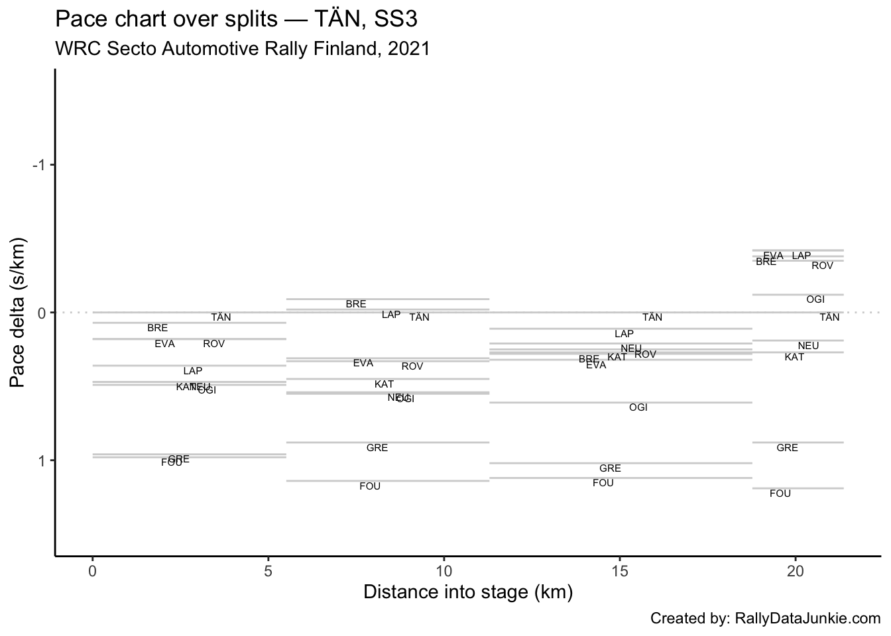
3.8 Driver Report, SS3 - KAT
KAT was in seventh on stage, 7.9s behind stage winner TÄN in a time of 622.4s and moved up two places to eighth overall, just 0.1s further back behind NEU.
Stage report for KAT.
| Pos | Car | Code | Time (s) | Gap | Diff |
|---|---|---|---|---|---|
| 1 | 8 | TÄN | -7.9 | -7.9 | 0.0 |
| 2 | 42 | BRE | -6.9 | -6.9 | 1.0 |
| 3 | 4 | LAP | -6.3 | -6.3 | 0.6 |
| 4 | 69 | ROV | -4.0 | -4.0 | 2.3 |
| 5 | 33 | EVA | -3.8 | -3.8 | 0.2 |
| 6 | 11 | NEU | -0.1 | -0.1 | 3.7 |
| 7 | 18 | KAT | 0.0 | 0.0 | 0.1 |
| 8 | 1 | OGI | 2.3 | 2.3 | 2.3 |
| 9 | 44 | GRE | 12.4 | 12.4 | 10.1 |
| 10 | 16 | FOU | 15.6 | 15.6 | 3.2 |
3.8.1 Rebased Split Times
KAT’s delta at each split compared to other drivers.
| code | split_1 | split_2 | split_3 | split_N |
|---|---|---|---|---|
| TÄN | -2.6 | -5.2 | -7.2 | -7.9 |
| BRE | -2.2 | -5.3 | -5.2 | -6.9 |
| LAP | -0.6 | -3.3 | -4.5 | -6.3 |
| ROV | -1.6 | -2.3 | -2.4 | -4.0 |
| EVA | -1.6 | -2.4 | -2.0 | -3.8 |
| NEU | 0.0 | 0.5 | 0.1 | -0.1 |
| KAT | 0.0 | 0.0 | 0.0 | 0.0 |
| OGI | 0.1 | 0.7 | 3.3 | 2.3 |
| GRE | 2.7 | 5.2 | 10.8 | 12.4 |
| FOU | 2.8 | 6.8 | 13.2 | 15.6 |
3.8.2 Off-the-Pace Chart
Accumulated stage time deltas at each split:
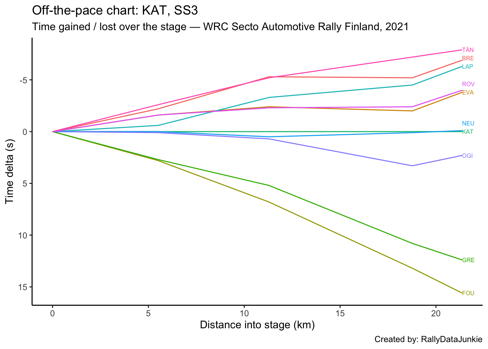
3.8.3 Within-Split Duration Deltas
KAT’s delta in time to complete each split section compared to other drivers:
| code | split_1 | split_2 | split_3 | split_N |
|---|---|---|---|---|
| TÄN | -2.6 | -2.6 | -2.0 | -0.7 |
| BRE | -2.2 | -3.1 | 0.1 | -1.7 |
| LAP | -0.6 | -2.7 | -1.2 | -1.8 |
| ROV | -1.6 | -0.7 | -0.1 | -1.6 |
| EVA | -1.6 | -0.8 | 0.4 | -1.8 |
| NEU | 0.0 | 0.5 | -0.4 | -0.2 |
| KAT | 0.0 | 0.0 | 0.0 | 0.0 |
| OGI | 0.1 | 0.6 | 2.6 | -1.0 |
| GRE | 2.7 | 2.5 | 5.6 | 1.6 |
| FOU | 2.8 | 4.0 | 6.4 | 2.4 |
3.8.4 Within-Split Pace Deltas
| code | split_1 | split_2 | split_3 | split_N |
|---|---|---|---|---|
| TÄN | -0.47 | -0.45 | -0.27 | -0.27 |
| BRE | -0.40 | -0.54 | 0.01 | -0.65 |
| LAP | -0.11 | -0.47 | -0.16 | -0.69 |
| ROV | -0.29 | -0.12 | -0.01 | -0.62 |
| EVA | -0.29 | -0.14 | 0.05 | -0.69 |
| NEU | 0.00 | 0.09 | -0.05 | -0.08 |
| KAT | 0.00 | 0.00 | 0.00 | 0.00 |
| OGI | 0.02 | 0.10 | 0.35 | -0.38 |
| GRE | 0.49 | 0.43 | 0.75 | 0.62 |
| FOU | 0.51 | 0.69 | 0.86 | 0.92 |
3.8.5 Within-Split Pace Map
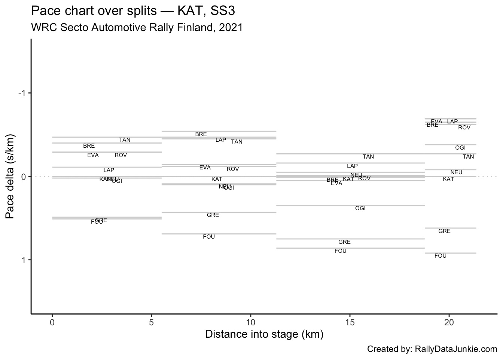
3.9 Driver Report, SS3 - BRE
BRE was in second position on stage, with a time of 615.5s .
Stage report for BRE.
| Pos | Car | Code | Time (s) | Gap | Diff |
|---|---|---|---|---|---|
| 1 | 8 | TÄN | -1.0 | -1.0 | 0.0 |
| 2 | 42 | BRE | 0.0 | 0.0 | 1.0 |
| 3 | 4 | LAP | 0.6 | 0.6 | 0.6 |
| 4 | 69 | ROV | 2.9 | 2.9 | 2.3 |
| 5 | 33 | EVA | 3.1 | 3.1 | 0.2 |
| 6 | 11 | NEU | 6.8 | 6.8 | 3.7 |
| 7 | 18 | KAT | 6.9 | 6.9 | 0.1 |
| 8 | 1 | OGI | 9.2 | 9.2 | 2.3 |
| 9 | 44 | GRE | 19.3 | 19.3 | 10.1 |
| 10 | 16 | FOU | 22.5 | 22.5 | 3.2 |
3.9.1 Rebased Split Times
BRE’s delta at each split compared to other drivers.
| code | split_1 | split_2 | split_3 | split_N |
|---|---|---|---|---|
| TÄN | -0.4 | 0.1 | -2.0 | -1.0 |
| BRE | 0.0 | 0.0 | 0.0 | 0.0 |
| LAP | 1.6 | 2.0 | 0.7 | 0.6 |
| ROV | 0.6 | 3.0 | 2.8 | 2.9 |
| EVA | 0.6 | 2.9 | 3.2 | 3.1 |
| NEU | 2.2 | 5.8 | 5.3 | 6.8 |
| KAT | 2.2 | 5.3 | 5.2 | 6.9 |
| OGI | 2.3 | 6.0 | 8.5 | 9.2 |
| GRE | 4.9 | 10.5 | 16.0 | 19.3 |
| FOU | 5.0 | 12.1 | 18.4 | 22.5 |
3.9.2 Off-the-Pace Chart
Accumulated stage time deltas at each split:
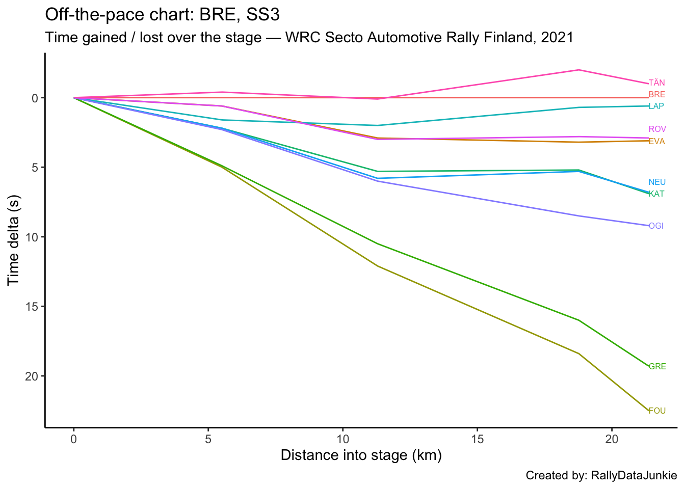
3.9.3 Within-Split Duration Deltas
BRE’s delta in time to complete each split section compared to other drivers:
| code | split_1 | split_2 | split_3 | split_N |
|---|---|---|---|---|
| TÄN | -0.4 | 0.5 | -2.1 | 1.0 |
| BRE | 0.0 | 0.0 | 0.0 | 0.0 |
| LAP | 1.6 | 0.4 | -1.3 | -0.1 |
| ROV | 0.6 | 2.4 | -0.2 | 0.1 |
| EVA | 0.6 | 2.3 | 0.3 | -0.1 |
| NEU | 2.2 | 3.6 | -0.5 | 1.5 |
| KAT | 2.2 | 3.1 | -0.1 | 1.7 |
| OGI | 2.3 | 3.7 | 2.5 | 0.7 |
| GRE | 4.9 | 5.6 | 5.5 | 3.3 |
| FOU | 5.0 | 7.1 | 6.3 | 4.1 |
3.9.4 Within-Split Pace Deltas
| code | split_1 | split_2 | split_3 | split_N |
|---|---|---|---|---|
| TÄN | -0.07 | 0.09 | -0.28 | 0.38 |
| BRE | 0.00 | 0.00 | 0.00 | 0.00 |
| LAP | 0.29 | 0.07 | -0.17 | -0.04 |
| ROV | 0.11 | 0.42 | -0.03 | 0.04 |
| EVA | 0.11 | 0.40 | 0.04 | -0.04 |
| NEU | 0.40 | 0.62 | -0.07 | 0.58 |
| KAT | 0.40 | 0.54 | -0.01 | 0.65 |
| OGI | 0.42 | 0.64 | 0.33 | 0.27 |
| GRE | 0.89 | 0.97 | 0.74 | 1.27 |
| FOU | 0.91 | 1.23 | 0.84 | 1.58 |
3.9.5 Within-Split Pace Map
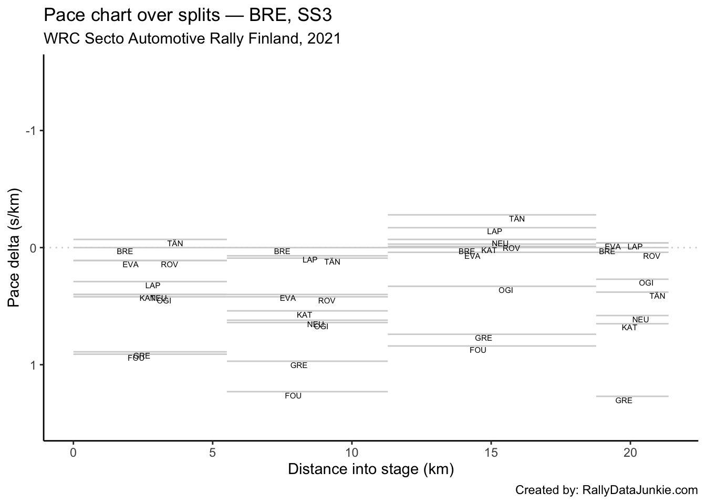
3.10 Driver Report, SS3 - GRE
GRE took ninth on stage, with a time of 634.8s dropped one place to ninth overall.
Stage report for GRE.
| Pos | Car | Code | Time (s) | Gap | Diff |
|---|---|---|---|---|---|
| 1 | 8 | TÄN | -20.3 | -20.3 | 0.0 |
| 2 | 42 | BRE | -19.3 | -19.3 | 1.0 |
| 3 | 4 | LAP | -18.7 | -18.7 | 0.6 |
| 4 | 69 | ROV | -16.4 | -16.4 | 2.3 |
| 5 | 33 | EVA | -16.2 | -16.2 | 0.2 |
| 6 | 11 | NEU | -12.5 | -12.5 | 3.7 |
| 7 | 18 | KAT | -12.4 | -12.4 | 0.1 |
| 8 | 1 | OGI | -10.1 | -10.1 | 2.3 |
| 9 | 44 | GRE | 0.0 | 0.0 | 10.1 |
| 10 | 16 | FOU | 3.2 | 3.2 | 3.2 |
3.10.1 Rebased Split Times
GRE’s delta at each split compared to other drivers.
| code | split_1 | split_2 | split_3 | split_N |
|---|---|---|---|---|
| TÄN | -5.3 | -10.4 | -18.0 | -20.3 |
| BRE | -4.9 | -10.5 | -16.0 | -19.3 |
| LAP | -3.3 | -8.5 | -15.3 | -18.7 |
| ROV | -4.3 | -7.5 | -13.2 | -16.4 |
| EVA | -4.3 | -7.6 | -12.8 | -16.2 |
| NEU | -2.7 | -4.7 | -10.7 | -12.5 |
| KAT | -2.7 | -5.2 | -10.8 | -12.4 |
| OGI | -2.6 | -4.5 | -7.5 | -10.1 |
| GRE | 0.0 | 0.0 | 0.0 | 0.0 |
| FOU | 0.1 | 1.6 | 2.4 | 3.2 |
3.10.2 Off-the-Pace Chart
Accumulated stage time deltas at each split:
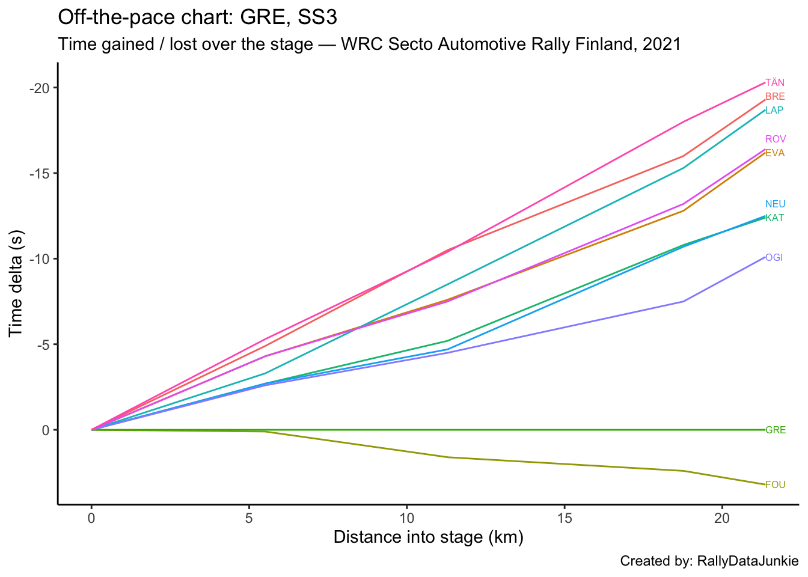
3.10.3 Within-Split Duration Deltas
GRE’s delta in time to complete each split section compared to other drivers:
| code | split_1 | split_2 | split_3 | split_N |
|---|---|---|---|---|
| TÄN | -5.3 | -5.1 | -7.6 | -2.3 |
| BRE | -4.9 | -5.6 | -5.5 | -3.3 |
| LAP | -3.3 | -5.2 | -6.8 | -3.4 |
| ROV | -4.3 | -3.2 | -5.7 | -3.2 |
| EVA | -4.3 | -3.3 | -5.2 | -3.4 |
| NEU | -2.7 | -2.0 | -6.0 | -1.8 |
| KAT | -2.7 | -2.5 | -5.6 | -1.6 |
| OGI | -2.6 | -1.9 | -3.0 | -2.6 |
| GRE | 0.0 | 0.0 | 0.0 | 0.0 |
| FOU | 0.1 | 1.5 | 0.8 | 0.8 |
3.10.4 Within-Split Pace Deltas
| code | split_1 | split_2 | split_3 | split_N |
|---|---|---|---|---|
| TÄN | -0.96 | -0.88 | -1.02 | -0.88 |
| BRE | -0.89 | -0.97 | -0.74 | -1.27 |
| LAP | -0.60 | -0.90 | -0.91 | -1.31 |
| ROV | -0.78 | -0.55 | -0.76 | -1.23 |
| EVA | -0.78 | -0.57 | -0.70 | -1.31 |
| NEU | -0.49 | -0.35 | -0.80 | -0.69 |
| KAT | -0.49 | -0.43 | -0.75 | -0.62 |
| OGI | -0.47 | -0.33 | -0.40 | -1.00 |
| GRE | 0.00 | 0.00 | 0.00 | 0.00 |
| FOU | 0.02 | 0.26 | 0.11 | 0.31 |
3.10.5 Within-Split Pace Map
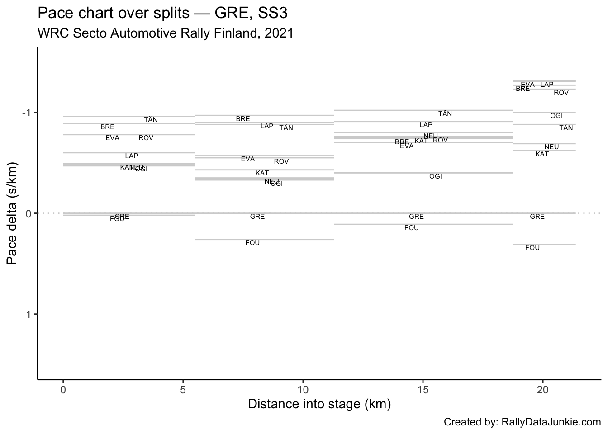
3.11 Driver Report, SS3 - FOU
FOU took tenth position on stage, 3.2s further back behind GRE dropped one place to tenth overall.
Stage report for FOU.
| Pos | Car | Code | Time (s) | Gap | Diff |
|---|---|---|---|---|---|
| 1 | 8 | TÄN | -23.5 | -23.5 | 0.0 |
| 2 | 42 | BRE | -22.5 | -22.5 | 1.0 |
| 3 | 4 | LAP | -21.9 | -21.9 | 0.6 |
| 4 | 69 | ROV | -19.6 | -19.6 | 2.3 |
| 5 | 33 | EVA | -19.4 | -19.4 | 0.2 |
| 6 | 11 | NEU | -15.7 | -15.7 | 3.7 |
| 7 | 18 | KAT | -15.6 | -15.6 | 0.1 |
| 8 | 1 | OGI | -13.3 | -13.3 | 2.3 |
| 9 | 44 | GRE | -3.2 | -3.2 | 10.1 |
| 10 | 16 | FOU | 0.0 | 0.0 | 3.2 |
3.11.1 Rebased Split Times
FOU’s delta at each split compared to other drivers.
| code | split_1 | split_2 | split_3 | split_N |
|---|---|---|---|---|
| TÄN | -5.4 | -12.0 | -20.4 | -23.5 |
| BRE | -5.0 | -12.1 | -18.4 | -22.5 |
| LAP | -3.4 | -10.1 | -17.7 | -21.9 |
| ROV | -4.4 | -9.1 | -15.6 | -19.6 |
| EVA | -4.4 | -9.2 | -15.2 | -19.4 |
| NEU | -2.8 | -6.3 | -13.1 | -15.7 |
| KAT | -2.8 | -6.8 | -13.2 | -15.6 |
| OGI | -2.7 | -6.1 | -9.9 | -13.3 |
| GRE | -0.1 | -1.6 | -2.4 | -3.2 |
| FOU | 0.0 | 0.0 | 0.0 | 0.0 |
3.11.2 Off-the-Pace Chart
Accumulated stage time deltas at each split:
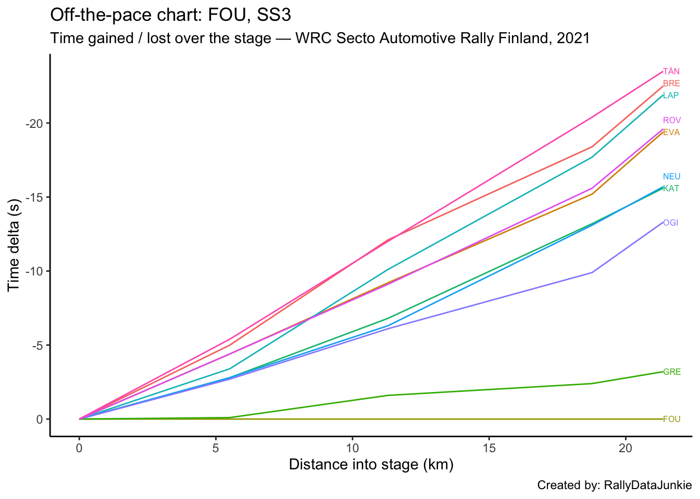
3.11.3 Within-Split Duration Deltas
FOU’s delta in time to complete each split section compared to other drivers:
| code | split_1 | split_2 | split_3 | split_N |
|---|---|---|---|---|
| TÄN | -5.4 | -6.6 | -8.4 | -3.1 |
| BRE | -5.0 | -7.1 | -6.3 | -4.1 |
| LAP | -3.4 | -6.7 | -7.6 | -4.2 |
| ROV | -4.4 | -4.7 | -6.5 | -4.0 |
| EVA | -4.4 | -4.8 | -6.0 | -4.2 |
| NEU | -2.8 | -3.5 | -6.8 | -2.6 |
| KAT | -2.8 | -4.0 | -6.4 | -2.4 |
| OGI | -2.7 | -3.4 | -3.8 | -3.4 |
| GRE | -0.1 | -1.5 | -0.8 | -0.8 |
| FOU | 0.0 | 0.0 | 0.0 | 0.0 |
3.11.4 Within-Split Pace Deltas
| code | split_1 | split_2 | split_3 | split_N |
|---|---|---|---|---|
| TÄN | -0.98 | -1.14 | -1.12 | -1.19 |
| BRE | -0.91 | -1.23 | -0.84 | -1.58 |
| LAP | -0.62 | -1.16 | -1.02 | -1.62 |
| ROV | -0.80 | -0.81 | -0.87 | -1.54 |
| EVA | -0.80 | -0.83 | -0.80 | -1.62 |
| NEU | -0.51 | -0.61 | -0.91 | -1.00 |
| KAT | -0.51 | -0.69 | -0.86 | -0.92 |
| OGI | -0.49 | -0.59 | -0.51 | -1.31 |
| GRE | -0.02 | -0.26 | -0.11 | -0.31 |
| FOU | 0.00 | 0.00 | 0.00 | 0.00 |
3.11.5 Within-Split Pace Map
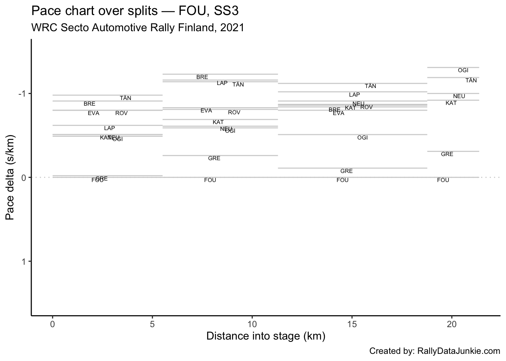
3.12 Driver Report, SS3 - LAP
LAP took third on stage, 1.6s behind TÄN in a time of 616.1s and moved up one place to third overall, just 0.6s further behind BRE.
Stage report for LAP.
| Pos | Car | Code | Time (s) | Gap | Diff |
|---|---|---|---|---|---|
| 1 | 8 | TÄN | -1.6 | -1.6 | 0.0 |
| 2 | 42 | BRE | -0.6 | -0.6 | 1.0 |
| 3 | 4 | LAP | 0.0 | 0.0 | 0.6 |
| 4 | 69 | ROV | 2.3 | 2.3 | 2.3 |
| 5 | 33 | EVA | 2.5 | 2.5 | 0.2 |
| 6 | 11 | NEU | 6.2 | 6.2 | 3.7 |
| 7 | 18 | KAT | 6.3 | 6.3 | 0.1 |
| 8 | 1 | OGI | 8.6 | 8.6 | 2.3 |
| 9 | 44 | GRE | 18.7 | 18.7 | 10.1 |
| 10 | 16 | FOU | 21.9 | 21.9 | 3.2 |
3.12.1 Rebased Split Times
LAP’s delta at each split compared to other drivers.
| code | split_1 | split_2 | split_3 | split_N |
|---|---|---|---|---|
| TÄN | -2.0 | -1.9 | -2.7 | -1.6 |
| BRE | -1.6 | -2.0 | -0.7 | -0.6 |
| LAP | 0.0 | 0.0 | 0.0 | 0.0 |
| ROV | -1.0 | 1.0 | 2.1 | 2.3 |
| EVA | -1.0 | 0.9 | 2.5 | 2.5 |
| NEU | 0.6 | 3.8 | 4.6 | 6.2 |
| KAT | 0.6 | 3.3 | 4.5 | 6.3 |
| OGI | 0.7 | 4.0 | 7.8 | 8.6 |
| GRE | 3.3 | 8.5 | 15.3 | 18.7 |
| FOU | 3.4 | 10.1 | 17.7 | 21.9 |
3.12.2 Off-the-Pace Chart
Accumulated stage time deltas at each split:
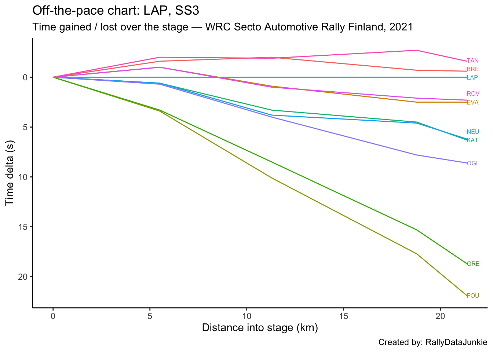
3.12.3 Within-Split Duration Deltas
LAP’s delta in time to complete each split section compared to other drivers:
| code | split_1 | split_2 | split_3 | split_N |
|---|---|---|---|---|
| TÄN | -2.0 | 0.1 | -0.8 | 1.1 |
| BRE | -1.6 | -0.4 | 1.3 | 0.1 |
| LAP | 0.0 | 0.0 | 0.0 | 0.0 |
| ROV | -1.0 | 2.0 | 1.1 | 0.2 |
| EVA | -1.0 | 1.9 | 1.6 | 0.0 |
| NEU | 0.6 | 3.2 | 0.8 | 1.6 |
| KAT | 0.6 | 2.7 | 1.2 | 1.8 |
| OGI | 0.7 | 3.3 | 3.8 | 0.8 |
| GRE | 3.3 | 5.2 | 6.8 | 3.4 |
| FOU | 3.4 | 6.7 | 7.6 | 4.2 |
3.12.4 Within-Split Pace Deltas
| code | split_1 | split_2 | split_3 | split_N |
|---|---|---|---|---|
| TÄN | -0.36 | 0.02 | -0.11 | 0.42 |
| BRE | -0.29 | -0.07 | 0.17 | 0.04 |
| LAP | 0.00 | 0.00 | 0.00 | 0.00 |
| ROV | -0.18 | 0.35 | 0.15 | 0.08 |
| EVA | -0.18 | 0.33 | 0.21 | 0.00 |
| NEU | 0.11 | 0.55 | 0.11 | 0.62 |
| KAT | 0.11 | 0.47 | 0.16 | 0.69 |
| OGI | 0.13 | 0.57 | 0.51 | 0.31 |
| GRE | 0.60 | 0.90 | 0.91 | 1.31 |
| FOU | 0.62 | 1.16 | 1.02 | 1.62 |
3.12.5 Within-Split Pace Map
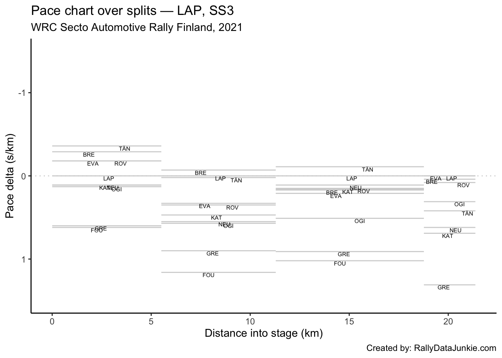